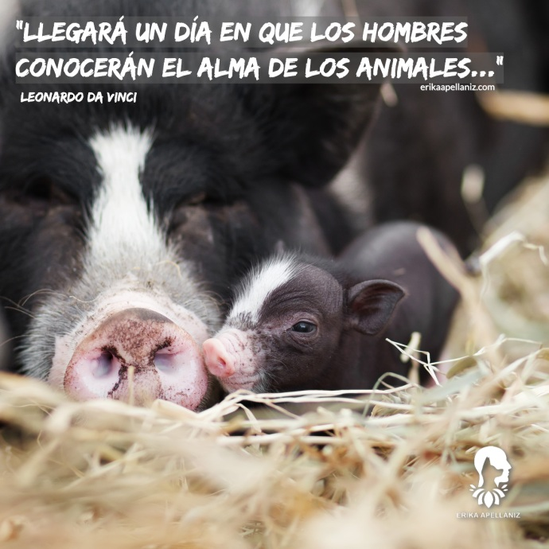

Espacio de Concientización Social
Pasa el mouse sobre cada burbuja para descubrir reflexiones sobre la protección de nuestros compañeros sintientes.

"El amor por todas las criaturas vivientes es el más noble atributo del ser humano." Charles Darwin Foto: M. Chang (Unsplash)

"La grandeza de una nación y su progreso moral pueden ser juzgados por la forma en que tratan a sus animales." — Mahatma Gandhi Foto: J. Koss (Unsplash)

"Los animales no son propiedades ni cosas, sino seres sintientes capaces de sentir dolor, felicidad, miedo y gratitud." — Enfoque Ético Ley 1774 Foto: C. Hume (Unsplash)
Mitos vs. Realidades del Comportamiento
Pasa el mouse sobre cada tarjeta para descubrir la realidad científica detrás de cada mito.
Mito 1
"Mi perro destruye mis cosas cuando me voy por venganza o rencor."
Realidad Científica
Los animales no actúan por rencor. La destrucción de objetos suele ser síntoma de ansiedad por separación, aburrimiento o altos niveles de estrés.
Mito 2
"Si un perro se lame una herida constantemente, se está curando solo."
Realidad Científica
La saliva animal contiene bacterias. El lamido obsesivo humedece la zona, empeora la inflamación y propicia infecciones severas.
Mito 3
"Esterilizar o castrar a un perro lo hace engordar."
Realidad Científica
El procedimiento puede causar cambios en el metabolismo. Estos cambios pueden manejarse adecuadamente con una dieta equilibrada y ejercicio.
Simulador de Tenencia Responsable
¿Estás preparado realmente para asumir el cuidado de un ser sintiente? Averígualo respondiendo este test rápido.

???
🎮 🥚